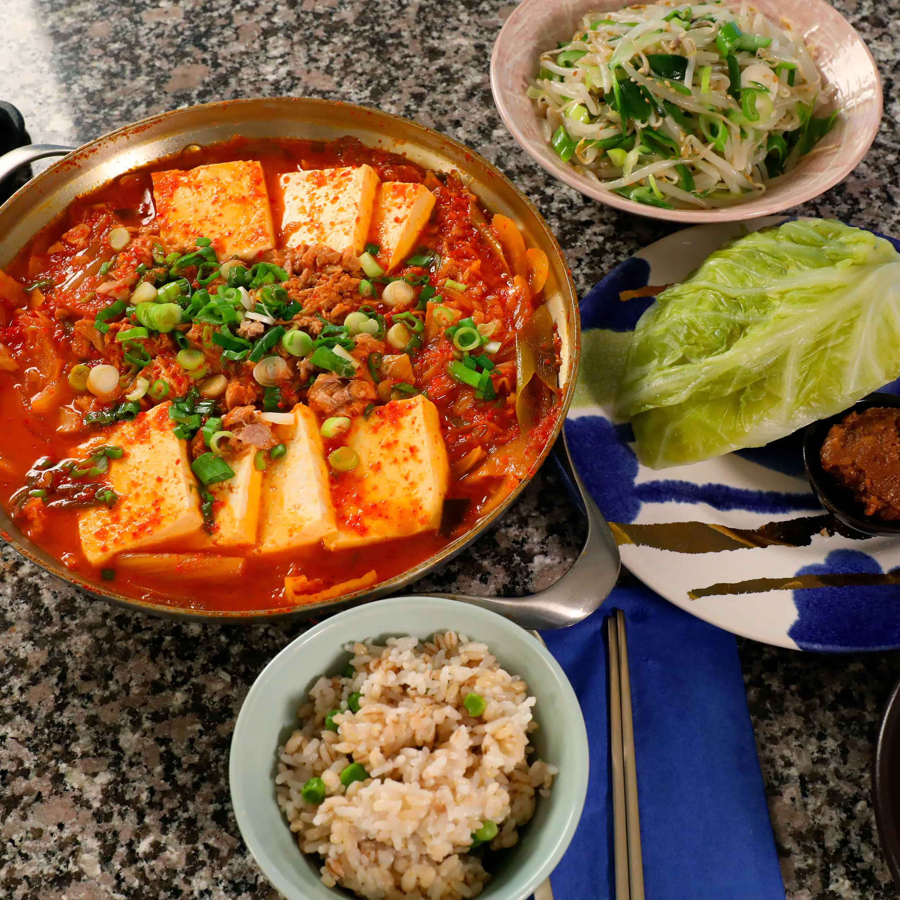

참치김치찌개 - Tuna kimchi stew

Description
One of my most favorite Korean dishes. Best made with self-made Kimchi, very much a comfort food for me. Usually quite spicy but not as extreme as other Korean dishes
Credits to Maangchi, for the following recipe that we can use. Visit her site and see the recipe on the original site here here.She is the reference for authentic Korean recipes in English.
Ingredients
- 1 or 2 cans of tuna
- 1 pound fermented kimchi, cut into 2 inch long pieces
- ¼ cup kimchi brine, optional
- 1 medium onion (about 1 cup), sliced
- 2 green onion, one cut diagonally into pieces and one chopped up into small pieces
- 1 teaspoon kosher salt
- 2 teaspoons Korean hot pepper flakes
- 2 teaspoons Turbinado sugar (or white or brown sugar)
- 2 teaspoons toasted sesame oil
- 8 ounces tofu (about 1 cup), sliced into bite size pieces
Steps
- Place the kimchi in a shallow, heavy pot or pan. Add kimchi brine, onion, green onion, kosher salt, hot pepper flakes, sugar, and toasted sesame oil. Add 2½ cups water and cover. Cook for 25 minutes over medium high heat. If it boils over, crack the lid a little and if the water boils out, add more so that the kimchi and all the ingredients are always submerged.
- Stir the stew with a wooden spoon and add tuna and tofu. Continue to cook for another 5 minutes until the tofu turns soft.
- Sprinkle with the chopped green onion and serve right away with rice and more side dishes if you desire.